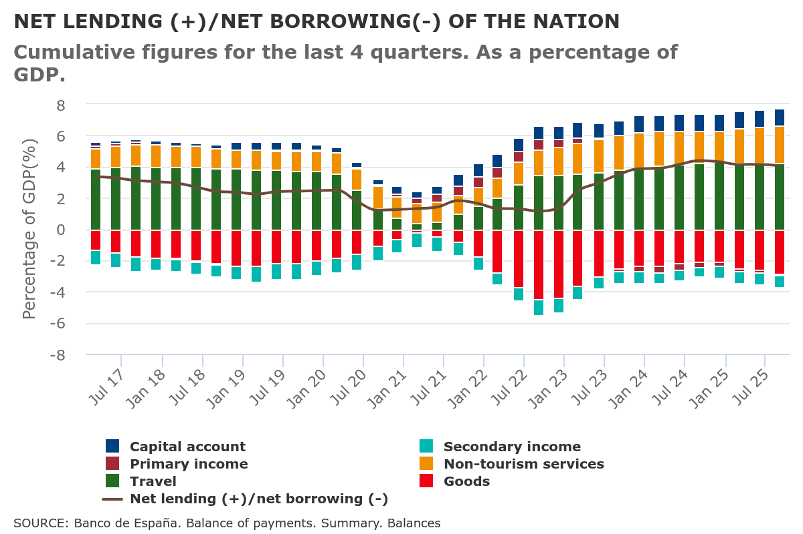

1.2 Balance of Paynments
Theory
Definition: Accounting document that provides a systematic record of economic transactions that occurred during a given period of time between residents of a country and residents of the rest of the world.
- Accounting: double entry
- Systematic: structured
- Transactions: Real and financial & With or without compensation
- Between residents and non-residents: Domestic
- Time period – Flow variable (vs stock Internations Investmen Position)
Estructure
· Current Account (CC)
o Goods (income X)
o Services (income X)
o Primary Income (factor income) Income (remuneration of domestic production factors abroad) and expenditures (remuneration of foreign production factors in the country):
Investment income
Employee compensation
o Secondary Income (current transfers) Accounting counterpart of real and/or financial movements, whether voluntary or obligatory, that do not imply a consideration in goods and/or services. (income: transfers received, expenses: transfers made)
Workers' remittances
Others
· Capital account : Capital transfers and operations on non-produced non-financial assets
· Financial Account (FA) Records all transactions related to the transfer of ownership of financial assets and liabilities of the economy to the rest of the world.
o Direct investment (participation greater than 10%)
o Portfolio investment (stocks)
o Others (Deposits, commercial credits)
o Reserve assets
· Errors and omissions: This account should be interpreted as a balance or statistical discrepancy account that compensates the rest. A positive sign is interpreted as an unrecorded income and, in the opposite case, as an expense.
Balances
· Trade balance
· G&S Balance
· The current account balance reflects what happens with the Savings-Investment relationship of an economy.
· Liquid assets balance (reserves)
Net Lending/Borrowing Position (NLBP) = Current Account+Capital Account = Financial Account (including Reserves)−Errors and Omissions (E&O)
Interpretations:
1 C/C deficit ➡️ the sum of X-M + RPN + RSN is negative
RNBD = GDP + RPN + RSN = FC + GCF + X -M + RPN + RSN
RNBD = FC + Savings (Gross National Savings)
FC + Savings = FC + GCF + X -M + RPN + RSN ⏩ Savings - GCF = X -M + RPN + RSN ⏩ Savings - Investment = C/C balance
2 C/C deficit ➡️Expenditure (absorption) greater than disposable income
Absorption = FC+FBC = Domestic demand or Domestic expending
RNBD - Absorption = X -M + RPN + RSN = C/C balance
3 C/C deficit ➡️ Investment > Savings If savings are greater than investment there will be a surplus in C/C
➡️ Differences between public and private savings and investment
4 C/C deficit ➡️ Net International Investment Position changes: Increase in the debtor position or Decrease in creditor position.
The International Investment Position (IIP) is a financial metric that summarizes a country's external assets and liabilities at a given point in time. It reflects the net financial position of a country with the rest of the world, indicating whether it is a net creditor or a net debtor.
Data

External statistics • BdE ank of Spain - Statistical Bulletin - Chapter 17 - Balance of payments and international investment position
pendiente incorporar https://www.ecb.europa.eu/press/calendars/statscal/ext/html/stprbp.en.html
Source: Euro area monthly balance of payments: November 2024 Balance of payments and international investment position


Source WB https://data.worldbank.org/indicator/BN.CAB.XOKA.CD?view=map
Source: IMF World Economic Outlook (October 2024) - Current account balance, percent of GDP
IMF Balance of Payments and International Investment Position - BOP/IIP Home - IMF Data (with country data)
UK: Balance of payments - Office for National Statistics
Glossary
- CA / Current Account: Part of a country's balance of payments that tracks the trade of goods and services, income from abroad, and current transfers, reflecting the nation's net income.
- Goods Balance (Exports Revenues X - Imports Payments M): The trade balance of goods, reflecting income from exported goods.
- Services (Exports Revenues X - Imports Payments M): The balance of services, showing income from services provided abroad.
- NPI: Net Primary Income (Factor Income): Records income and expenses related to the remuneration of production factors, including:
- Investment Income: Earnings from foreign investments, such as dividends, interest, and profits.
- Employee Compensation: Wages and salaries received by residents working abroad and paid to foreign workers in the country.
- NSI - Net Secondary Income (Current Transfers): Accounting counterpart of real and/or financial movements that do not involve compensation in goods or services, either voluntary or mandatory. It includes:
- Workers' Remittances: Money sent by migrant workers to their home country.
- Other Transfers: Other types of current international transfers.
- KA - Capital Account: Records capital transfers and transactions involving non-produced, non-financial assets. It includes:
- Capital Transfers: International transactions that involve changes in ownership of fixed assets or debt forgiveness.
- Operations on Non-Produced, Non-Financial Assets: Includes sales or acquisitions of patents, copyrights, trademarks, and land used by embassies.
- FA - Financial Account: A component of a country's balance of payments that records transactions involving financial assets and liabilities with the rest of the world, including investments and loans.
- FDI - Foreing Direct Investment: Foreign investment involving ownership of at least 10% in a company. Portfolio Investment: Investments in financial securities, such as stocks and bonds, that do not confer significant control over the company.
- Other Investments: Includes commercial loans, deposits, and other financial assets that do not fall under direct or portfolio investment.
- Reserve Assets: Foreign currency reserves and other highly liquid assets held by central banks to manage exchange rate stability and financial crises.
- E&O - Errors and Omissions: It serves as a balancing or statistical discrepancy account.. A positive balance indicates unrecorded inflows, while a negative balance suggests unrecorded outflows.
- NLBP - Net Lending/Borrowing Position: Indicates whether an economy is a net lender (surplus) or net borrower (deficit) to the rest of the world, based on the balance of its financial transactions.
Exercise
-
Comment the balance of payment of one country.
-
Take a look of the Current Account balance of a contry and see what happend with the International Invesment Position. Comment